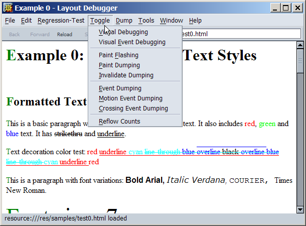

The Layoutdebugger
The Layout Debugger was written by David Baron as a replacement for the viewer.exe

It can show:
box dimensions of blocks without a border
the targets of mouse events
flashes for every paint
how many times a frame has been reflown
frame and view information